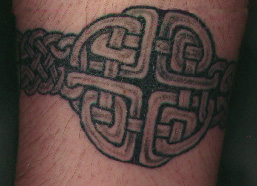

Celtic anklet

The band itself is Irish Celtic, taken from a border
design on a page in the Book of Kells (Canon-Table, f.2v, c.800). The shield knot
is Scottish Pictish, taken from a "spectacle" symbol on the Drosken
Stone at St Vigeans, Perthshire.
Visit Pat's
home page...